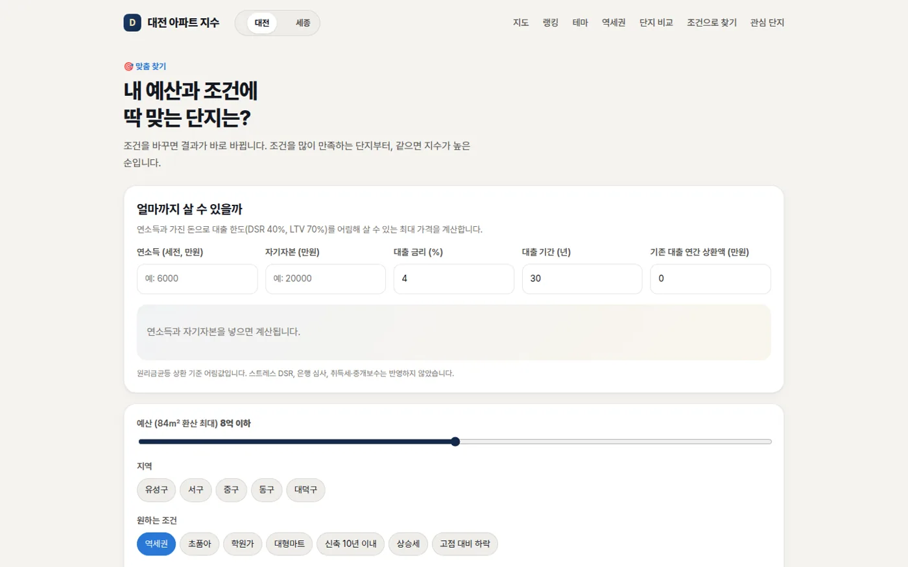
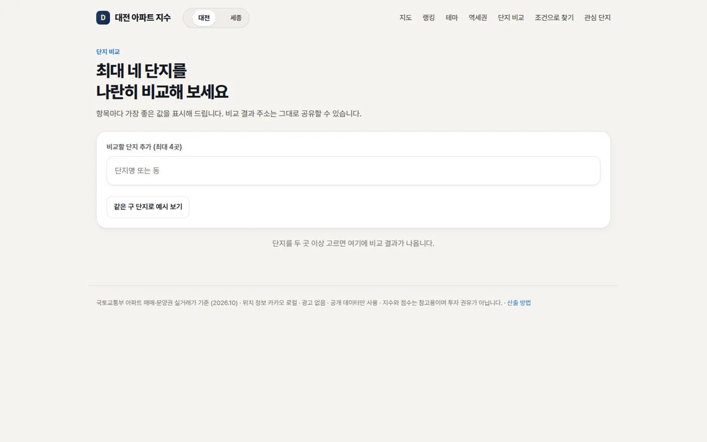
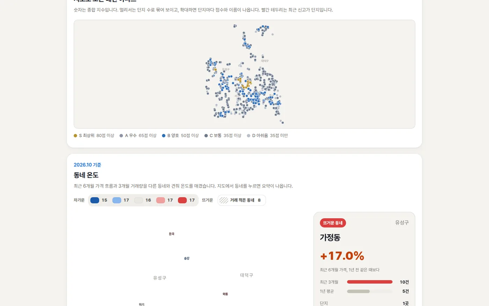

데이터 · 개인 프로젝트
대전 아파트 지수 — 618개 단지 비교 서비스
공공데이터를 수집·정제해 대전·세종 아파트의 가격, 입지, 수익률을 비교할 수 있도록 만든 개인 프로젝트입니다.
01시작한 이유
수도권에 비해 대전 지역의 아파트를 같은 기준으로 비교할 수 있는 서비스가 적었습니다. 공개 데이터를 활용해 대전 단지 비교 서비스를 만들고 이후 세종까지 범위를 넓혔습니다.

02데이터 수집과 운영
| 데이터 | 어디서 | 무엇에 쓰나 |
|---|---|---|
| 아파트 매매·분양권 실거래가 | 국토교통부 (공공데이터포털) | 가격 · 수익률 · 거래량 |
| 좌표 · 주변 시설 | 카카오 로컬 API | 입지점수 (역 · 초등학교 · 학원 · 대형마트 · 병원) |
| 소비자물가지수 | 통계청 KOSIS | 물가를 뺀 실질수익률 |
국토교통부 실거래가, 주변 시설, 소비자물가지수를 가공해 정적 페이지를 생성합니다. GitHub Actions가 최근 데이터를 다시 수집해 매일 사이트를 갱신하며, 별도 서버 없이 운영합니다.
03지표 설계 기준
① 중위가격을 사용하고 거래 2건 미만은 제외
- 문제
- 거래가 몇 건 없는 단지는 한 건의 특이 거래가 가격을 크게 흔듭니다.
- 결정
- "84㎡ 환산가"를 최근 12개월 거래의 ㎡당 중위가격 × 84로 정의하고, 거래가 2건 미만이면 아예 계산하지 않습니다.
② 명목수익률과 실질수익률을 구분해 표시
- 문제
- 10년 수익률은 물가를 빼느냐에 따라 크게 달라집니다.
- 결정
- 물가지수가 있으면 실질수익률을 계산하고, 없으면 명목 수익률을 보여 주면서 화면에 "명목"이라고 표시합니다. 사용자가 두 값을 혼동하지 않게 하기 위해서입니다.
③ 해제 거래와 직거래는 기본값에서 제외
- 문제
- 계약이 해제된 거래나 가족 간 직거래는 시세를 왜곡합니다.
- 결정
- 기본값에서 제외하고, 모든 기준과 가중치는 설정 파일 하나에서 바꿀 수 있게 했습니다.
종합 지수는 입지점수와 10년·5년 수익률 백분위의 평균으로 계산했습니다. 계산 기준은 README에 공개해 각 점수가 어떤 데이터와 기준에서 나왔는지 확인할 수 있게 했습니다.
04구매자의 질문에 맞춘 화면
| 페이지 | 답하는 질문 |
|---|---|
| 단지 페이지 | 이 단지는 몇 점인가 — 입지·성장성·상승세·가성비·거래량 카드, 가격 추이, 입지 레이더 |
| 단지 비교 | A와 B 중 어디가 나은가 — 최대 4곳을 항목별로, 비교 결과를 주소로 공유 |
| 역세권 | 역 가까운 곳은 어디인가 — 지하철역 700m 안 단지를 지수 순으로 |
| 맞춤 찾기 | 나는 얼마까지 살 수 있나 — 연소득·자기자본으로 DSR·LTV 기준 살 수 있는 가격 계산 |
| 관심 단지 | 내가 본 단지는 — 브라우저에만 저장, 서버로 보내지 않음 |



05공유와 검색
단지별 링크에는 "단지명 · 지수 82 S등급"처럼 서로 다른 미리보기가 나타나도록 설정했습니다. 사이트맵도 함께 생성해 구글과 네이버 검색에 등록할 수 있게 했습니다. 서비스를 만든 뒤 사용자가 검색과 공유를 통해 들어오는 경로까지 운영 범위에 포함했습니다.
06다음 단계와 회고
다음에는 세대수와 브랜드, 학군, 전세가율 정보를 추가할 계획입니다.
이 프로젝트에서는 지표를 해석하는 데서 나아가 지표의 정의부터 맡았습니다. 어떤 거래를 제외하고 언제 점수를 표시하지 않을지 정하면서, 지표 설계에는 계산식뿐 아니라 결과를 보여 주지 않을 조건도 필요하다는 점을 배웠습니다.
사이트 보기 ↗ · GitHub ↗ · 지수와 점수는 참고용이며 투자 권유가 아닙니다.